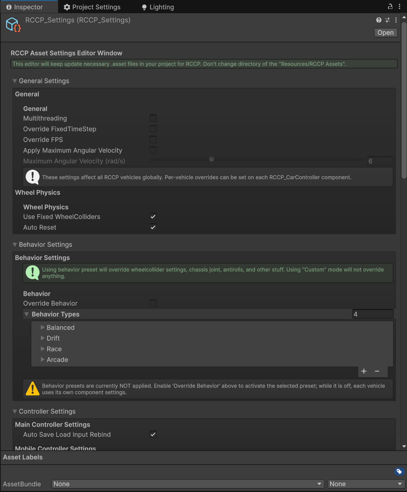

Settings
Table of Contents
- Settings
- Accessing Settings
- Runtime Clone (Important)
- General Settings
- Logging
- Behavior Presets
- How to use behaviors
- Stability Aids
- ESP V2 (Yaw-Rate Bicycle Model)
- Steering Configuration
- Differential Type
- Per-Vehicle Suspension Multipliers (V2.31.1+)
- Inertia Tensor Scaling (V2.53+)
- Drift Mode Settings
- Gear Shifting
- Anti-Roll Bar
- Wheel Friction
- Wheel Physics
- Units and Display
- Input Rebinding
- Mobile Settings
- Controller Types
- Layer Configuration
- Layer Purposes
- Light Rendering
- Prefab References
- Camera Prefabs
- UI Prefabs
- Particle Prefabs
- Other Prefabs
- Audio Settings
- Engine Sounds
- Effect Sounds
- Audio Mixer
- Rendering Settings
- Recommended Settings for Common Scenarios
- Realistic Driving Simulation
- Arcade Racing
- Drift Game
- Next Steps
Realistic Car Controller Pro stores all of its global configuration in a single ScriptableObject called RCCP_Settings. This is the central control panel for physics behavior, mobile input, layer management, audio defaults, and much more. Before you start building vehicles, it is worth spending a few minutes here to understand what each section does and why it matters.
Accessing Settings
There are three ways to open and work with RCCP Settings:
- From the menu: Tools > BoneCracker Games > Realistic Car Controller Pro > Settings
- From code (editor or initialization):
RCCP_Settings.Instance - File location on disk:
Assets/Realistic Car Controller Pro/Resources/RCCP_Settings.asset

Runtime Clone (Important)
At runtime, RCCP automatically creates a clone of the Settings asset so that any changes made during play mode do not overwrite your saved configuration. All built-in RCCP components already use this clone internally.
If you are writing your own scripts and need to read settings at runtime, always use:
RCCP_Settings runtimeSettings = RCCP_RuntimeSettings.RCCPSettingsInstance;
Using RCCP_Settings.Instance directly at runtime would modify the original asset, which could cause unexpected changes that persist after you exit play mode.
General Settings
These settings affect every vehicle in your project.
| Setting | Type | Default | Description |
|---|---|---|---|
| Multithreading | bool | true | Enables asynchronous processing for damage calculations on supported platforms. Falls back to single-threaded if the platform does not support it. |
| Override FPS | bool | true | When enabled, overrides Unity's target frame rate with the value below. |
| Max FPS | int | 120 | The target frame rate when Override FPS is enabled. Higher values give smoother visuals but require more CPU/GPU power. |
| Override Fixed Timestep | bool | true | When enabled, overrides Unity's fixed timestep with the value below. |
| Fixed Timestep | float | 0.02 | The interval (in seconds) between physics updates. 0.02 means 50 physics updates per second. Lower values (like 0.01) give more accurate physics but cost more CPU. For most games, 0.02 is the sweet spot. |
| Max Angular Velocity | float | 6 | Maximum rotation speed for vehicle rigidbodies, range 0.5 to 20. Only applied while Apply Max Angular Velocity (below) is enabled -- before V2.57 this value was shown in the inspector but never applied. |
| Apply Max Angular Velocity | bool | false | V2.57+: applies Max Angular Velocity to every vehicle rigidbody on spawn. Off by default, so existing projects keep their uncapped rotation behavior. Enabling it caps rotation speed for ALL vehicles and changes flip/spin feel. |
Logging
| Setting | Type | Default | Description |
|---|---|---|---|
| Verbose Console Logs | bool | true | V2.51+: when off, routine Debug.Log success messages (vehicle spawned, behavior changed, record saved, damage save/load, etc.) are suppressed. Warnings and errors are never gated by this flag and always log. Turn it off for a quiet console in production projects; turn it back on when diagnosing an issue. |
Behavior Presets
Behaviors are the heart of RCCP's physics tuning. A behavior preset defines a complete driving feel -- stability aids, steering response, drift characteristics, differential type, and wheel friction curves all in one package.
You can create multiple behavior presets and switch between them at runtime to offer different driving modes (for example, a Realistic mode and an Arcade mode in the same game).
How to use behaviors
- In RCCP Settings, check the Override Behavior checkbox.
- The behaviorTypes array becomes editable. Each element is one preset.
- Set the Behavior Selected Index to choose which preset is active by default.
- At runtime, change the active behavior through the RCCP API or by modifying the selected index.
Stability Aids
Every behavior preset includes toggles for six stability systems. These helpers make vehicles easier (or harder) to control depending on how you configure them.
| Aid | Default | What It Does |
|---|---|---|
| ABS (Anti-lock Braking) | On | Prevents wheels from locking up under hard braking. Without ABS, slamming the brakes causes the wheels to stop rotating entirely, which reduces steering control and increases stopping distance. |
| ESP (Electronic Stability) | On | Applies individual wheel brakes automatically to prevent the vehicle from spinning out during sharp turns or sudden direction changes. RCCP ships a yaw-rate bicycle-model ESP (see ESP V2 below) — this toggle is the master on/off. |
| TCS (Traction Control) | On | Limits wheel spin during acceleration. Prevents the driven wheels from spinning freely on slippery surfaces or under heavy throttle. |
| Steering Helper | On | Automatically corrects the vehicle's direction to align with its velocity. Higher values make the car feel more "on rails," lower values feel more raw. |
| Traction Helper | On | Reduces wheel slip beyond a threshold. Similar to TCS but works as a broader stability system across all driving conditions. |
| Angular Drag Helper | Off | Dampens the vehicle's rotational velocity at higher speeds to prevent spinning out. Useful for arcade-style games where you want the car to feel planted. |
Each aid also has minimum and maximum strength values that define how aggressively it intervenes. For example, Steering Helper Strength ranges from 0.1 (subtle correction) to 1.0 (aggressive correction).
ESP V2 (Yaw-Rate Bicycle Model)
RCCP's ESP uses a production-style bicycle model to compute a reference yaw rate ψ̇_ref = V · δ / (L + K_us · V²), clamped by the friction limit ψ̇_max = μ · g / V, then runs a PD controller on the error between actual and reference yaw. Based on that error (and sideslip β), ESP classifies the condition as oversteer or understeer and applies corrective brake torque to the appropriate wheel — plus a matching motor-torque cut so the driven wheel does not fight the brake.
These settings live directly on the RCCP_Stability component on each vehicle (under the ESP and ESP V2 headers in the Inspector). They are per-vehicle and not part of the global behavior preset.
V2.31.1 aggressive Sport baseline: the defaults shown below were retuned in V2.31.1 to an "aggressive Sport baseline" — they are deliberately tuned for production-feel intervention strength (early engagement, quick response, decisive correction), not a passive realism baseline. Existing serialized vehicle prefabs keep their authored values; only new RCCP_Stability() (i.e. freshly added stability components) picks up these defaults.
Core ESP settings:
| Setting | Range | Default | Description |
|---|---|---|---|
| ESP | bool | On | Master on/off for the whole ESP pipeline. |
| ESP Intensity | 0.0 – 1.0 | 0.5 | Global gain on the brake torque ESP produces. Lower = subtler intervention. |
| ESP Deadband | 0.5 – 10 deg/s | 6 | Yaw-rate error threshold above which ESP engages. Lower = more aggressive. Production typical: 4 deg/s. |
| ESP Deactivation Deadband | 0.1 – 5 deg/s | 2.5 | Hysteresis band. Once engaged, ESP releases only when error drops below this. Should be 1–3 deg/s below the engagement deadband. |
| ESP Min Intervention Time | 0 – 0.5 sec | 0.055 | Minimum time ESP stays engaged after firing. Prevents flutter during transients. Production typical: 0.1–0.2s. |
ESP Mode:
| Mode | Behavior |
|---|---|
| Normal | Standard thresholds, brake differential plus engine torque reduction. The default. |
| Sport | ~2× wider deadbands and no engine cut — just brake differential. For experienced drivers or simulation modes. |
Bicycle model parameters:
| Setting | Range | Default | Description |
|---|---|---|---|
| Understeer Gradient (K_us) | 0 – 0.01 rad·s²/m | 0.01 | Shapes ψ̇_ref at high speed. Typical passenger car: 0.0035. Sportier: 0.002. Comfort/SUV: 0.005+. |
| Estimated Mu (μ) | 0.1 – 1.2 | 0.85 | Road friction coefficient used to clamp the reference yaw rate. 0.9–1.0 dry, 0.5–0.7 wet, 0.2–0.4 snow/ice. |
| ESP P Gain | 0.5 – 10 | 4 | Proportional gain (multiplied by vehicle mass). Higher = stronger correction per unit of yaw error. |
| ESP D Gain | 0 – 2 | 0.3 | Derivative gain. Dampens rapid yaw changes, speeds response to lift-off oversteer (which develops in 200–500 ms). |
| Yaw Rate Time Constant | 0.05 – 0.3 sec | 0.25 | First-order lag filter on ψ̇_ref. Prevents ESP from commanding instantaneous yaw changes from flicks. |
Oversteer vs understeer classification:
| Setting | Range | Default | Description | ||
|---|---|---|---|---|---|
| ESP Mode Commit Time | 0 – 0.5 sec | 0.2 | Minimum time ESP holds its oversteer/understeer classification before allowing a flip. Prevents wrong-wheel braking during transients. | ||
| Sideslip Max Angle | 3 – 20 deg | 10 | When ` | β | ` exceeds this, ESP forces oversteer classification even if yaw error alone would read as understeer. Outer bound of the controllable envelope. |
| Sideslip Max Rate | 5 – 30 deg/s | 15 | When ` | dβ/dt | ` exceeds this, ESP promotes to oversteer. Catches developing spins earlier than yaw error alone. |
Dashboard indicator (UI debounce):
ESP exposes two engagement flags — ESPEngaged (the raw runtime state) and ESPIndicatorEngaged (the user-facing dashboard flag). The indicator is gated so the dashboard light does not flicker on micro-corrections the driver cannot feel:
| Setting | Range | Default | Description |
|---|---|---|---|
| Min Noticeable Brake Torque | 0 – 500 Nm | 75 | Smoothed max brake torque must exceed this before ESPIndicatorEngaged flips true. 0 = mirror ESPEngaged directly. |
| UI Min Hold Time | 0 – 1 sec | 0.1 | How long ESPIndicatorEngaged stays true after brake torque last crossed the threshold. Fast turn-on, slow turn-off. |
Arcade speed preservation (opt-in):
| Setting | Range | Default | Description |
|---|---|---|---|
| Preserve Speed Factor | 0.0 – 1.0 | 1 | 0 = realistic (ESP bleeds speed through the corner). 1 = full cancellation of ESP brake deceleration via a compensating forward force (corrective yaw still works, but the car does not slow down). Does not affect the engine torque cut — combine with ESP Mode = Sport to disable that separately. |
See Telemetry and Debug for how to read ESPEngaged, ESPIndicatorEngaged, yaw rate error, and sideslip in code. See Troubleshooting for common ESP tuning issues.
Steering Configuration
| Setting | Default | Description |
|---|---|---|
| Steering Curve | AnimationCurve | Defines how steering angle changes with speed. X-axis is speed in km/h, Y-axis is the maximum steering angle in degrees. At 0 km/h the default curve gives 40 degrees; at 200 km/h it drops to 5 degrees. This prevents twitchy steering at highway speeds. |
| Steering Sensitivity | 1.0 | How quickly steering input reaches full lock. Higher values mean faster response. |
| Counter Steering | On | Automatically counter-steers during oversteer to help the driver recover. |
| Limit Steering | On | Reduces the maximum steering angle at high speed using the steering curve above. |
Additional range settings control the min/max bounds for counter-steering strength (default 0.5 to 1.0) and steering speed sensitivity (default 0.5 to 1.0).
Differential Type
Each behavior preset includes a differential type setting that affects how power is distributed between driven wheels:
- Open -- Allows wheels to spin at different speeds. Most realistic for road cars.
- Limited -- Partially locks the wheels together. Good balance of realism and stability.
- FullLocked -- Both driven wheels always spin at the same speed. Maximum traction but less realistic cornering.
- Direct -- Simplified power delivery. Good for arcade-style games.
Per-Vehicle Suspension Multipliers (V2.31.1+)
Behavior presets in V2.31.1 carry two suspension multipliers that scale each vehicle's authored spring and damper rates, instead of overwriting them with absolute values. Each RCCP_WheelCollider captures its authored base spring and damper at Awake() (with a 50000 / 3500 fallback if the prefab values are zero) and scales those base values by the active behavior preset's multipliers.
| Setting | Range | Default | Description |
|---|---|---|---|
| Suspension Spring Multiplier | 0.25 – 3 | 1.0 | Multiplies each wheel's authored base spring rate. 1× = vehicle default, >1 stiffer (sport/race feel), <1 softer (comfort/SUV feel). |
| Suspension Damper Multiplier | 0.25 – 3 | 1.0 | Multiplies each wheel's authored base damper rate. 1× = vehicle default. |
All four shipped behavior presets ship at 1.0× / 1.0× — i.e. they do not modify suspension. Customize the multipliers per preset to give each driving mode a distinct ride feel. Because the multipliers scale the authored values rather than replacing them, the same preset works correctly across vehicles of very different masses and ride heights.
Inertia Tensor Scaling (V2.53+)
The inertia tensor is the Rigidbody's rotational resistance per axis — it decides how eagerly a vehicle pitches, yaws, and rolls independently of its mass. Since V2.53, behavior presets can scale it per axis, which is how the shipped presets give the Drift preset its eager turn-in and the Arcade preset its light, flickable feel without touching mass or suspension.
Per-preset fields (on BehaviorType):
| Setting | Type | Default | Description |
|---|---|---|---|
| Apply Inertia Scale | bool | false | When enabled, the preset pushes Inertia Scale into each vehicle's RCCP_AeroDynamics inertia-tensor override (Multiplier mode). When off, the preset leaves the vehicle's inertia tensor untouched. |
| Inertia Scale | Vector3 | (1, 1, 1) | Per-axis multiplier on the auto-computed inertia tensor: X = Pitch, Y = Yaw, Z = Roll. 1 = stock. Lower Yaw makes the car rotate into turns more eagerly (drift/arcade); higher values feel heavier and more planted. Scale-invariant — it multiplies the auto-computed base, so the same preset works across vehicles of different masses. |
All four shipped presets enable Apply Inertia Scale. Balanced ships at identity (1, 1, 1), so it changes nothing; the others ship with tuned multipliers (Drift 0.85 / 1.05 / 1.15, Race 0.85 / 1.15 / 0.85, Arcade 0.75 / 0.75 / 0.75, as of V2.57).
Per-vehicle override (on RCCP_AeroDynamics):
The behavior preset writes into the vehicle's RCCP_AeroDynamics inertia-tensor override, which you can also drive directly per vehicle:
| Setting | Type | Default | Description |
|---|---|---|---|
| Override Inertia Tensor | bool | false | Takes control of the Rigidbody inertia tensor. When off (default), Unity's automatic tensor is used — identical to stock behavior. |
| Inertia Tensor Mode | enum | Multiplier | Multiplier scales the auto-computed tensor per axis (recommended, works on any vehicle). AbsoluteOverride freezes exact kg·m² principal moments (advanced). |
| Inertia Tensor Scale | Vector3 | (1, 1, 1) | Per-axis multiplier used in Multiplier mode (X = Pitch, Y = Yaw, Z = Roll). |
| Inertia Tensor Absolute | Vector3 | (2000, 2030, 400) | Absolute principal moments in kg·m², used only in AbsoluteOverride mode. |
While the override is active the tensor is frozen — it is not recomputed automatically when the vehicle changes shape. Call RCCP_AeroDynamics.RecomputeInertia() after colliders or the center of mass change (damage detaches a part, a trailer attaches, etc.) to refresh it. Setting Override Inertia Tensor back to false hands control back to Unity's automatic tensor.
Switching from a preset that applies inertia scaling to one that does not will NOT revert the tensor — the last applied values remain until you disable the override or apply another preset that writes new ones.
Drift Mode Settings
Drift mode adds force-based drift assistance and reduces rear tire grip for controlled sliding. These settings only take effect when driftMode is enabled in the behavior preset.
Core drift settings:
| Setting | Range | Default | Description |
|---|---|---|---|
| Drift Mode | bool | Off | Master toggle for all drift physics. |
| Drift Angle Limiter | bool | Off | When enabled, corrects angular velocity if the drift angle exceeds the limit. Prevents uncontrollable spins. |
| Drift Angle Limit | 0-90 degrees | 35 | Maximum allowed drift angle before correction forces kick in. |
| Drift Angle Correction Factor | 0-10 | 5 | How aggressively the angle is corrected when exceeding the limit. Higher values mean faster correction. The per-preset BehaviorType.driftAngleCorrectionFactor field defaults to 3, but the shipped V2.37.1 Drift preset asset overrides it to 5. |
Drift forces:
| Setting | Range | Default | Description |
|---|---|---|---|
| Yaw Torque Multiplier | 0-3 | 0.7 | How fast the car rotates into a drift. Higher values make the car rotate more aggressively. |
| Forward Force Multiplier | 0-5000 | 2000 | Forward push during drift to maintain speed. Higher values reduce speed loss while sliding. |
| Sideways Force Multiplier | 0-4000 | 1500 | Lateral push during drift. Higher values push the car further sideways for wider drifts. |
| Min Speed | 0-60 km/h | 20 | Minimum speed for drift forces to activate. Below this speed, no drift assistance is applied. |
| Full Force Speed | 20-150 km/h | 80 | Speed at which drift forces reach full strength. Forces scale linearly between min speed and this value. |
| Throttle Yaw Factor | 0-1 | 0.3 | How much throttle alone contributes to yaw rotation. Higher values let you initiate drifts with throttle, without needing to steer. |
Drift friction:
These settings control how much tire grip is lost during drifting. Each value represents a multiplier where 1.0 means no grip reduction.
| Setting | Range | Default | Description |
|---|---|---|---|
| Rear Sideways Stiffness Min | 0.1-1.0 | 0.45 | Minimum rear tire sideways grip during full drift. Lower values allow more lateral sliding. |
| Rear Forward Stiffness Min | 0.5-1.0 | 0.8 | Minimum rear tire forward grip during full drift. Lower values cause more speed loss. |
| Front Sideways Stiffness Min | 0.5-1.2 | 0.9 | Minimum front tire sideways grip during drift. Higher values keep the front end responsive for steering. |
| Friction Response Speed | 1-20 | 8 | How quickly grip reduces when entering a drift. |
| Friction Recovery Speed | 1-20 | 4 | How quickly grip recovers when exiting a drift. |
Drift recovery:
| Setting | Range | Default | Description |
|---|---|---|---|
| Max Angular Velocity | 0-360 deg/s | 120 | Maximum rotation speed during drift. Prevents uncontrollable spins. 0 disables the limit. |
| Counter Steer Recovery Boost | 1-5 | 2 | Multiplier for recovery force when counter-steering during drift. Higher values make recovery easier. |
| Momentum Maintenance Force | 0-3000 | 800 | Constant forward force during drift to prevent speed loss. |
| Force Smoothing | 1-20 | 8 | Smoothing speed for drift force transitions. Higher values mean faster response, lower values mean smoother transitions. |
V2.37.1 Drift preset retune
The shipped Drift behavior preset received targeted tuning in V2.37.1 to make β arrest cleanly at driftAngleLimit and to keep behavior consistent across vehicles of different masses:
- All three driver-aid helpers are disabled on the Drift preset —
steeringHelper,tractionHelper, andangularDragHelperare all off. Leaving any of them on creates a sustain limit cycle that fights the drift-angle limiter; β oscillates instead of settling. driftAngleCorrectionFactorwas raised from 2 → 5 in the Drift preset asset so yaw consistently arrests atdriftAngleLimit. β no longer drifts past 100° on sustained slides.- Drift force/torque targets are mass-scaled at runtime so the same preset feels equivalent on a 1100 kg compact and a 2000 kg muscle car, rather than overpowering the lighter vehicle.
- The drift angle cap is inverse-mass-scaled — heavier vehicles get a tighter angular cap, which keeps recovery predictable when momentum is high.
LimitDriftAngleandTractionHelperwere patched in V2.37.1 for correct reverse-driving behavior. Earlier builds applied a forward-driving sign convention even when the vehicle was reversing, which caused the helpers to fight the driver instead of assisting.
Gear Shifting
Each behavior preset controls automatic transmission timing:
| Setting | Range | Default | Description |
|---|---|---|---|
| Gear Shifting Threshold | 0.1-0.9 | 0.8 | Normalized RPM threshold (0 to 1) at which automatic gear shifts occur. |
| Gear Shifting Delay Min | 0-1 sec | 0.15 | Minimum delay between automatic gear shifts. |
| Gear Shifting Delay Max | 0-1 sec | 0.5 | Maximum delay between automatic gear shifts. |
Anti-Roll Bar
| Setting | Default | Description |
|---|---|---|
| Anti Roll Minimum | 500 | Minimum anti-roll bar force to reduce body roll in corners. Higher values keep the car flatter through turns. |
Wheel Friction
Each behavior preset defines friction curves for front and rear wheels separately. These values map directly to Unity's WheelFrictionCurve and control how much grip the tires have.
There are four friction groups, each with four parameters:
| Group | Affects |
|---|---|
| Forward Front | Acceleration and braking grip for front wheels |
| Forward Rear | Acceleration and braking grip for rear wheels |
| Sideways Front | Cornering grip for front wheels |
| Sideways Rear | Cornering grip for rear wheels |
Each group has these four values:
| Parameter | Description |
|---|---|
| Extremum Slip | The slip value at which maximum friction force is generated. |
| Extremum Value | The maximum friction force at the extremum slip point. |
| Asymptote Slip | The slip value beyond which friction force stabilizes at a lower level. |
| Asymptote Value | The friction force at and beyond the asymptote slip point. |
In plain terms: Higher extremum and asymptote values mean more grip. Lower values mean the tires slide more easily. The front-vs-rear balance determines whether the car tends to understeer (front slides first) or oversteer (rear slides first).
Default front forward friction: Extremum Slip 0.4, Extremum Value 1.0, Asymptote Slip 0.8, Asymptote Value 0.5
Default rear forward friction: Extremum Slip 0.4, Extremum Value 0.95, Asymptote Slip 0.75, Asymptote Value 0.5
Default front sideways friction: Extremum Slip 0.4, Extremum Value 1.0, Asymptote Slip 0.5, Asymptote Value 0.75
Default rear sideways friction: Extremum Slip 0.4, Extremum Value 1.05, Asymptote Slip 0.5, Asymptote Value 0.8
V2.37.1 Race preset retune
The shipped Race behavior preset received a small front-grip bump in V2.37.1 to fix understeer that developed during sustained high-g cornering: sidewaysExtremumValue_F 1.0 → 1.2 and sidewaysAsymptoteValue_F 0.75 → 0.9. Front lateral grip now holds at the load the rear is producing during sustained ≥ 0.85 g cornering, so the front does not wash out before the rear breaks loose. Skidpad sustains ≥ 0.85 g for 3 s after this change (was 0.32 s before retune).
Wheel Physics
| Setting | Default | Description |
|---|---|---|
| Use Fixed Wheel Colliders | On | Uses heavier-mass wheel colliders for more stability. Recommended for most projects. Disabling this uses lighter colliders that may bounce or jitter on uneven terrain. |
| Auto Reset | On | Automatically resets the vehicle to an upright position if it is flipped upside down for too long. Useful for gameplay; disable for simulation or crash-focused games. |
Units and Display
| Setting | Default | Description |
|---|---|---|
| Use MPH | Off | Switches the speed display from kilometers per hour (km/h) to miles per hour (mph). This affects UI elements and telemetry readouts. |
| Use Telemetry | Off | Shows a real-time vehicle data overlay during play mode, including speed, RPM, gear, slip values, and more. See Telemetry and Debug. |
| Use Input Debugger | Off | Shows a real-time overlay of current input values (throttle, brake, steering) during play mode. Helpful for diagnosing control issues. |
Input Rebinding
| Setting | Default | Description |
|---|---|---|
| Auto Save/Load Input Rebind | On | Automatically saves custom key bindings to PlayerPrefs when the player changes them, and loads them back on the next session. Disable this if you want to manage input persistence yourself. |
For full details on the input system and how to set up custom key bindings, see Inputs.
Mobile Settings
These settings control the on-screen touch controls for mobile platforms (iOS, Android).
| Setting | Default | Description |
|---|---|---|
| Mobile Controller Enabled | Off | Shows or hides the mobile UI controls. Enable this for mobile builds. |
Controller Types
When mobile controls are enabled, you can choose from four input methods:
| Type | How It Works |
|---|---|
| TouchScreen | On-screen left/right buttons for steering, plus throttle and brake buttons. Simple and reliable. |
| Gyro | Tilt the device to steer. The gyro sensitivity setting (default 2.5) controls how much tilt is needed. |
| SteeringWheel | An on-screen rotatable steering wheel that the player drags to steer. Feels more immersive. |
| Joystick | An analog joystick for steering input. Good for players who want proportional control without gyro. |
For detailed mobile setup instructions, see Mobile.
Layer Configuration
RCCP uses dedicated physics layers to manage collision detection between vehicles, wheels, and world objects. Proper layer setup is essential for the damage system, detachable parts, and prop interactions to work correctly.
| Setting | Default | Description |
|---|---|---|
| Set Layers | On | When enabled, RCCP automatically creates and assigns layers during setup. |
Layer Purposes
| Layer Name | Purpose |
|---|---|
| RCCP_Vehicle | Assigned to all vehicle GameObjects. Used for collision detection between vehicles and the environment. |
| RCCP_WheelCollider | Assigned to wheel physics objects. Separated from the vehicle layer so wheels can have independent collision behavior. |
| RCCP_DetachablePart | Assigned to breakable body panels (doors, bumpers, hoods). Separated so detached parts do not collide with the parent vehicle. |
| RCCP_Prop | Assigned to interactive props like traffic cones and barriers that react to vehicle contact. |
| RCCP_Obstacle | Assigned to static obstacles in the environment. |
The collision matrix is automatically configured so that vehicles do not collide with their own detachable parts while those parts are still attached. Once a part detaches, it re-enters normal collision.
If you see vehicles passing through objects or detachable parts jittering, the first thing to check is whether layers are set up correctly. Go to Edit > Project Settings > Physics (or Physics 3D in Unity 6) and verify the collision matrix.
Light Rendering
RCCP lets you choose between vertex lights and pixel lights for each light type on the vehicle. This is a performance-vs-quality tradeoff.
| Light Type | Default Mode | Description |
|---|---|---|
| Headlights | Pixel | Full-quality lighting with shadows and accurate falloff. Most visible, so pixel is recommended. |
| Brake Lights | Vertex | Cheaper rendering. Acceptable because brake lights are usually small and behind the vehicle. |
| Reverse Lights | Vertex | Same reasoning as brake lights -- small and rarely the focus of attention. |
| Indicator Lights | Vertex | Blink on and off, so the quality difference is less noticeable. |
| Other Lights | Vertex | Any additional lights on the vehicle (fog lights, auxiliary lights). |
When to change these: If you are targeting high-end platforms (PC, consoles) and want the best visuals, switch everything to pixel lights. If you are targeting mobile or need to optimize performance, keep most lights as vertex and only use pixel for headlights.
Prefab References
RCCP Settings holds references to prefabs that are instantiated automatically when needed. You generally do not need to change these unless you want to replace the default camera system or UI.
Camera Prefabs
| Prefab | Purpose |
|---|---|
| RCCP Main Camera | The primary chase camera that follows the player vehicle. |
| RCCP Hood Camera | A camera mounted on the vehicle hood for a first-person driving view. |
| RCCP Wheel Camera | A camera that focuses on a specific wheel, useful for replays or inspection. |
| RCCP Cinematic Camera | Provides dynamic camera angles for dramatic moments or cutscenes. |
| RCCP Fixed Camera | A static camera placed at a fixed position in the scene. |
UI Prefabs
| Prefab | Purpose |
|---|---|
| RCCP Canvas | The main UI canvas containing dashboard elements, speedometer, and mobile controls. |
| RCCP Telemetry | The telemetry overlay that displays real-time vehicle data when Use Telemetry is enabled. |
Particle Prefabs
| Prefab | Purpose |
|---|---|
| Contact Particles | General surface contact effects (dust, debris). |
| Scratch Particles | Metal scratching sparks on collision. |
| Wheel Sparkle Particles | Sparks from wheels on hard surfaces (like driving on rims). |
| Exhaust Gas | Exhaust smoke effect. |
| Wheel Blur | Visual blur effect for high-speed wheel rotation. |
Other Prefabs
| Prefab | Purpose |
|---|---|
| Skidmarks Manager | Handles tire mark rendering on surfaces. One shared instance for all vehicles. |
| Light Box | Visual mesh for light-emitting elements on the vehicle. |
| Flare Prefab | Lens flare effect attached to vehicle lights. |
Audio Settings
RCCP Settings contains default audio clips that are used when a vehicle does not have custom audio assigned. You can replace any of these with your own clips.
Engine Sounds
Engine audio uses a layered system with four RPM ranges, each having an "on" (throttle pressed) and "off" (throttle released) variant:
| Clip | When It Plays |
|---|---|
| Engine Idle On / Off | Engine at idle RPM. |
| Engine Low On / Off | Engine at low RPM range. |
| Engine Medium On / Off | Engine at medium RPM range. |
| Engine High On / Off | Engine at high RPM range. |
| Engine Start | Played once when the engine is started (cranking sound). |
The system crossfades between these layers based on current RPM, creating a smooth and realistic engine sound that changes with throttle and speed.
Effect Sounds
| Clip | When It Plays |
|---|---|
| Brake | Brake squeal at low speeds under braking. |
| Wind | Wind noise that increases with vehicle speed. |
| Reversing | Reversing beep or whine when driving backward. |
| Indicator | Click sound when turn indicators are active. |
| NOS | Nitrous oxide activation burst. |
| Turbo | Turbocharger spool and blow-off valve sound. |
| Bump | Suspension impact on bumps and road irregularities. |
| Gear Shift (array) | One clip per gear change. Multiple clips can be assigned for variety. |
| Crash (array) | Collision impact sounds, randomly selected on crash. |
| Blowout (array) | Tire blowout sounds. |
| Exhaust Flame (array) | Exhaust backfire sounds. |
| Wheel Deflate | Sound when a tire loses air. |
| Wheel Inflate | Sound when a tire is reinflated. |
| Wheel Flat | Continuous sound of driving on a flat tire. |
Audio Mixer
An optional Audio Mixer Group can be assigned in settings. When set, all RCCP vehicle audio routes through this mixer, giving you centralized volume control and the ability to apply audio effects (reverb, EQ) to all vehicle sounds at once.
Rendering Settings
These settings control visual effects related to the render pipeline.
| Setting | Purpose |
|---|---|
| Lens Flare Data | Lens flare asset for Scriptable Render Pipeline (URP/HDRP). |
| Flare (Legacy) | Lens flare for the Built-in Render Pipeline. |
| HDRP Volume Profile Prefab | Volume profile prefab used when running in HDRP. |
| Default Decal Material | Material applied to vehicle decal projectors. |
| Default Neon Material | Material applied to vehicle neon underglow lights. |
| Vehicle Collider Material | Physics material applied to vehicle body colliders, controlling friction and bounce on contact. |
Recommended Settings for Common Scenarios
Here are some starting points depending on the type of game you are building:
Realistic Driving Simulation
- Override Behavior: On
- ABS, ESP, TCS: On
- ESP Intensity: 0.3 – 0.5; ESP Mode: Normal; Preserve Speed Factor: 0
- Steering Helper: On, low strength (0.1-0.3)
- Traction Helper: On, low strength (0.1-0.3)
- Drift Mode: Off
- Differential: Open or Limited
- Fixed Timestep: 0.01 (for more accurate physics)
Arcade Racing
- Override Behavior: On
- ABS, ESP, TCS: On
- ESP Intensity: 0.7 – 1.0; ESP Mode: Normal; Preserve Speed Factor: 0.5 – 1.0 (keeps speed through corners while ESP still corrects yaw)
- Steering Helper: On, high strength (0.6-1.0)
- Angular Drag Helper: On
- Drift Mode: Off
- Differential: FullLocked or Direct
- Fixed Timestep: 0.02
Drift Game
- Override Behavior: On
- ABS: On, ESP: Off, TCS: Off
- Steering Helper, Traction Helper, Angular Drag Helper: all Off (any of them on creates a sustain limit cycle that fights the drift-angle limiter)
- Drift Mode: On
- Drift Angle Limiter: On (30-45 degrees)
driftAngleCorrectionFactor: 5- Counter Steering: On
- Differential: Limited or FullLocked
- Lower rear sideways friction values
Next Steps
- Vehicle Setup -- Set up vehicles that use the settings and behaviors you configured here
- Inputs -- Configure controls and key bindings
- Architecture Overview -- Understand how behaviors flow through the drivetrain chain
Support: bonecrackergames@gmail.com | www.bonecrackergames.com
Need help? See Troubleshooting